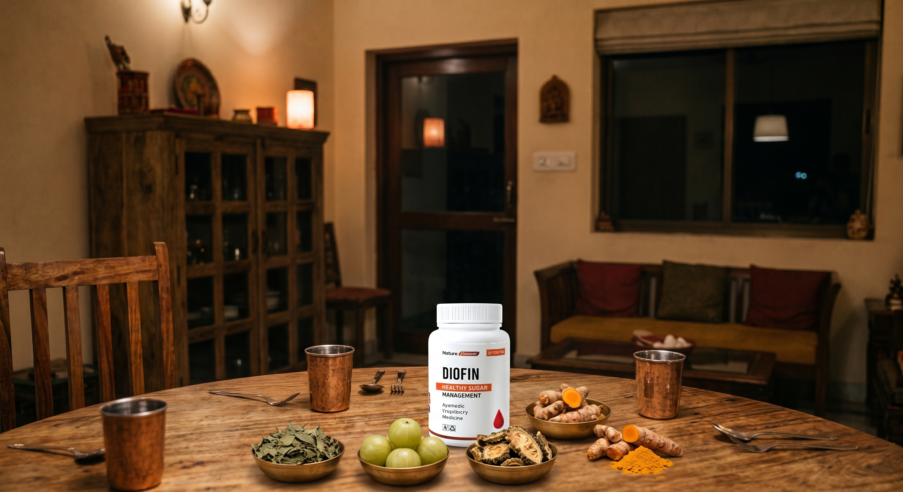
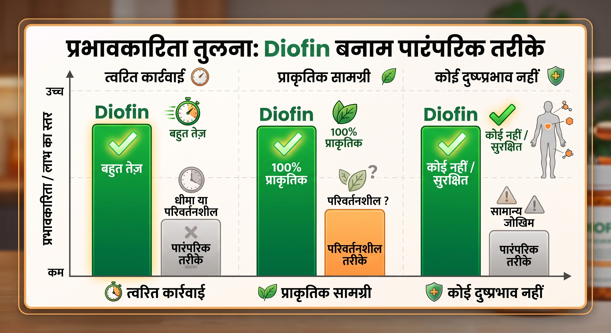

कैसे मधुमेह भारतीय परिवारों की खुशी छीन रहा है – मिलिए उस प्राकृतिक समाधान से जो इस परिदृश्य को बदल रहा है

भोजन का अलगाव और अपराधबोध
अपने परिवार के साथ मेज पर बैठना और यह महसूस करना कि आप हमेशा बाहर हैं, थकाऊ है। जबकि हर कोई गर्म चावल, ताज़े रोटी या समारोहों में पारंपरिक मिठाइयों का आनंद लेता है, आपको प्रतिबंधों और ग्लूकोज बढ़ने के निरंतर डर से समझौता करना पड़ता है। भोजन, जो हमेशा भारतीय संस्कृति में खुशी और एकता का केंद्र रहा है, अब दैनिक चिंता और अपराधबोध का स्रोत बन गया है।
आपने हिस्से को कम करने की कोशिश की है, चीनी छोड़ दी है, और यहां तक कि चमत्कार का वादा करने वाली कड़वी चाय भी पी है, लेकिन ग्लूकोज मीटर अभी भी डरावने नंबर दिखाता है। यह मौन अभाव न केवल खाने की आपकी खुशी छीन लेता है, बल्कि यह हर दिन आपकी महत्वपूर्ण ऊर्जा को भी सोख लेता है, जिससे दिन शुरू होने से पहले ही आप थक जाते हैं।

खामोश डर और स्वतंत्रता का खोना
हर दिन ऐसी थकान के साथ उठना जो दूर नहीं होती और थोड़ी धुंधली दृष्टि एक क्रूर याद दिलाती है कि मधुमेह आपके शरीर में चुपचाप काम कर रहा है। बच्चों और पोते-पोतियों की देखभाल करना भारतीय जीवन का सबसे बड़ा उद्देश्य है, लेकिन यह बीमारी इस भूमिका को अपमानजनक तरीके से उलट देती है। सबसे गहरा दर्द सुई की चुभन नहीं है, बल्कि हर बार जब आप कमजोर या चक्कर महसूस करते हैं तो अपने परिवार के चेहरों पर निरंतर चिंता देखना है।
आपने अपनी पूरी जिंदगी इसलिए कड़ी मेहनत नहीं की कि आप अपने आराम के साल क्लीनिकों में फँसकर और अंतहीन दवाओं पर अपनी बचत खर्च करके बिताएं। आप यह भी भूल चुके हैं कि आपने कितनी बार मेथी के बीज चबाए हैं या खाली पेट करेला का रस पिया है, लेकिन कोई निश्चित परिणाम नहीं दिखा।

आपकी स्वतंत्रता के लिए निश्चित समाधान: Diofin
एक ऐसा रास्ता है जहाँ आपको अपना ब्लड शुगर नियंत्रण में रखने के लिए परिवार के साथ अच्छे पलों का त्याग नहीं करना पड़ता। Diofin को 100% प्राकृतिक कैप्सूल समाधान के रूप में विकसित किया गया है, जो इंसुलिन प्रतिरोध के मूल कारण पर सीधे कार्य करने के लिए केंद्रित वनस्पति अर्क को मिलाता है।
इसका उच्च-अवशोषण फार्मूला रक्त शर्करा के स्तर को लगातार स्थिर करने का काम करता है, जो आपकी दैनिक ऊर्जा को बहाल करने और आपके महत्वपूर्ण अंगों को बीमारी के मूक नुकसान से बचाने में मदद करता है। एक सरल उपचार के साथ, यह आपकी मन की शांति और अत्यधिक प्रतिबंधों के बिना जीवन का आनंद लेने की स्वतंत्रता लौटाता है।
रैंकिंग: भारत में मधुमेह नियंत्रण के लिए शीर्ष 5 उत्पाद
🏆 1. Diofin (पहली पसंद #1)
प्रारूप: उच्च अवशोषण कैप्सूल।
यह रैंकिंग में सबसे ऊपर क्यों है: धीमी गति से काम करने वाले घरेलू उपचार या पेट के लिए कठोर दवाओं के विपरीत, Diofin एक व्यावहारिक उपचार प्रदान करता है जो भारतीय कार्बोहाइड्रेट-समृद्ध आहार (जैसे सफेद चावल और रोटी) के लिए पूरी तरह से अनुकूल है। यह भोजन के बाद ग्लाइसेमिक स्पाइक्स को रोकता है और पूरी तरह से प्राकृतिक तरीके से इंसुलिन के प्रति सेलुलर संवेदनशीलता में सुधार करते हुए एक चयापचय ढाल के रूप में कार्य करता है।
मुख्य विशेषताएं: रक्त शर्करा के स्तर का तेजी से नियंत्रण, थकान और धुंधली दृष्टि से राहत, शून्य दुष्प्रभाव, और दैनिक उपयोग में अत्यधिक आसानी।

2. Himalaya Diabecon DS
प्रारूप: आयुर्वेदिक गोलियां।
भारत के सबसे स्थापित ब्रांडों में से एक द्वारा निर्मित, यह जिमनेमा सिल्वेस्ट्रे (Gymnema sylvestre) और करेला जैसे क्लासिक अवयवों को जोड़ता है। यह अग्नाशय के समर्थन के लिए एक अच्छा पारंपरिक विकल्प है, हालांकि प्रभावी होने के लिए इसे दिन में कई खुराक लेने की आवश्यकता होती है।
3. Kapiva Dia Free Juice
प्रारूप: केंद्रित वनस्पति रस।
करेला, जामुन और आंवला के संयोजन पर केंद्रित एक लोकप्रिय तरल समाधान। यह आयुर्वेदिक चिकित्सा के अनुयायियों द्वारा व्यापक रूप से स्वीकार किया जाता है, लेकिन इसका बहुत कड़वा स्वाद दीर्घकालिक उपचार जारी रखने में एक बड़ी बाधा है।
4. Aimil BGR-34
प्रारूप: हर्बल गोलियां।
भारत सरकार के अनुसंधान संस्थानों द्वारा विकसित, यह सिद्ध प्रभावकारिता वाले छह औषधीय पौधों को एक साथ लाता है। स्थानीय बाजार में इसका मजबूत अधिकार और विश्वास है, जो सख्त आहार के साथ रखरखाव के लिए आदर्श है।
5. Dr. Vaidya's MyPrash for Diabetes Care
प्रारूप: हर्बल पेस्ट (प्राश)।
प्रसिद्ध च्यवनप्राश का एक चीनी मुक्त संस्करण। यह रक्त शर्करा में भारी और तत्काल कमी के बजाय मधुमेह रोगी की समग्र प्रतिरक्षा को मजबूत करने पर अधिक ध्यान केंद्रित करता है, जो एक अच्छे सहायक पूरक के रूप में कार्य करता है।